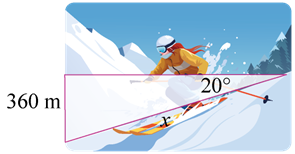
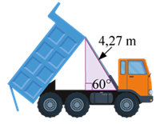

1.
Simplifica los radicales y ordena las expresiones de menor a mayor.

<
<
<
<
<
2.
Completa la tabla utilizando lo aprendido sobre la simplificación de expresiones radicales.
3.
Expresa las siguientes expresiones mediante un solo radical.
4.
Resuelve las siguientes operaciones con radicales.
5.
Une la relación trigonométrica con el ángulo al que pertenece.
6.
Calcula los ángulos de los siguientes triángulos rectángulos.
7.
Fernando se encuentra esquiando en una montaña con una altitud de 360 m. El ángulo de depresión es
20°. Halla la distancia de x.

x = m.
8.
El cuerpo de un camión de volteo es elevado para descargar una carga de arena. ¿Qué tan alto está el
cuerpo de 4,27 metros de largo del marco, cuando su punta está hacia arriba con un ángulo de 60°?

El cuerpo está a una altura de
metros.
9.
Cada mitad de un puente elevadizo es de 86,56 metros de largo. ¿Qué tan alto se eleva el puente
cuando su ángulo es 45°?

La altura es de
metros.